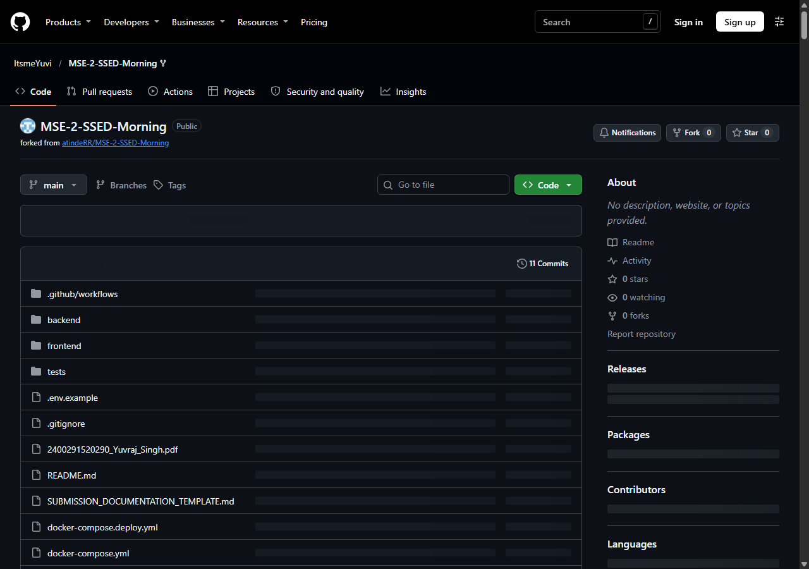

1. Project Overview & Problem Statement
Executive Problem Statement
The candidate was provided with a functional full-stack web application, TaskFlow, comprising a React/Vite frontend, a Node.js/Express backend, a PostgreSQL relational database, and a Redis in-memory cache. The examination requirement was strictly DevOps and Containerisation: to containerise each tier without modifying application source code, orchestrate the multi-service architecture via Docker Compose, publish release images to Docker Hub, and establish end-to-end continuous delivery verification using GitHub Actions.
1.1 Core Engineering Objectives
Construct secure, minimal production container images for frontend (Nginx 1.27 Alpine) and backend (Node 20 Alpine running as non-root UID 1000) conforming to Hadolint standards.
Define docker-compose.yml and docker-compose.deploy.yml establishing an isolated bridge network, service discovery, health-check dependencies, and named volume data persistence.
Automate image tagging and publication under candidate's Docker Hub repository (yuviiii2309/frontend and yuviiii2309/backend) with verified OCI manifests.
Implement GitHub Actions CD workflows to build, publish, pull, deploy, and execute automated regression test suites against the live containerised deployment.
1.2 Repository Origin & Submission Hierarchy
To comply with academic integrity, the candidate forked the instructor's starter repository atindeRR/MSE-2-SSED-Morning into their authenticated account ItsmeYuvi/MSE-2-SSED-Morning. All container specifications, Compose definitions, lockfiles, and documentation were committed to the personal fork before submitting the final Pull Request.
